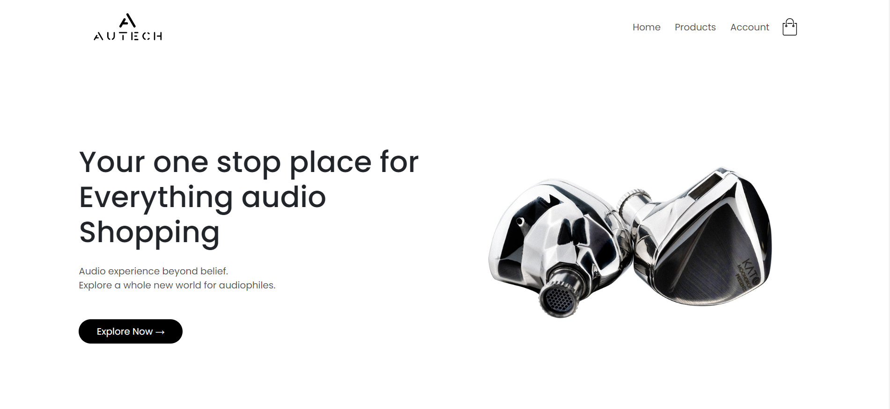
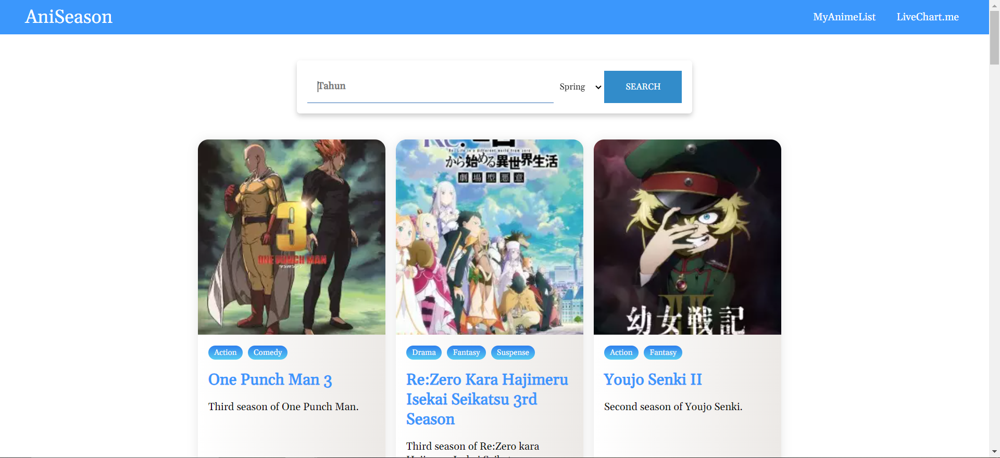
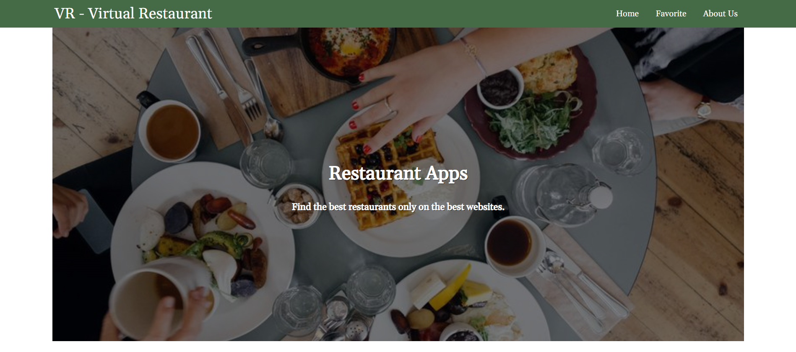
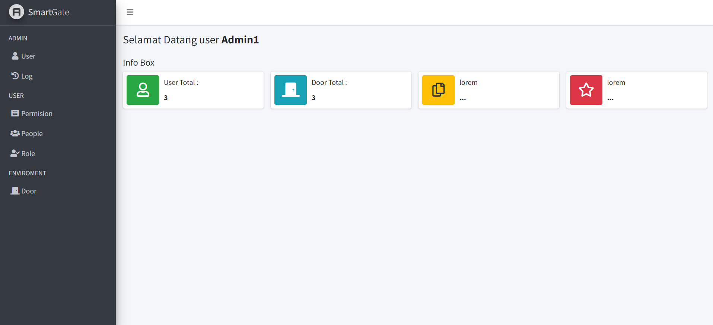
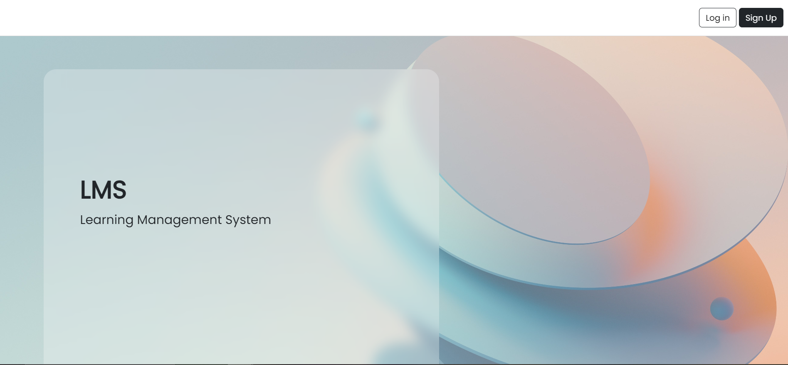
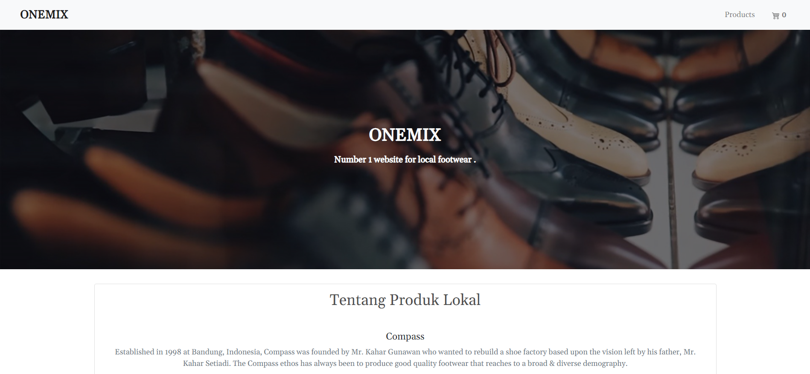

Featured Projects

BURHGER KING
A front-end website created as part of a web design course. Demonstrated proficiency in creating responsive and visually appealing designs.

AUTECH
An E-Commerce website developed for a Secure Programming course. Implemented a secure and scalable backend with Laravel and a user-friendly interface using Bootstrap.

ANISEASON
A web application for browsing anime by seasons and years. Designed dynamic filtering functionality and an intuitive user interface.

VIRTUAL RESTAURANT
A website showcasing the best restaurants in several cities. Built a clean and responsive interface to display restaurant details attractively.

SMARTGATE
An admin website for gate management. Integrated real-time admin management functionality and secured database operations.

LMS
A web application to assist schools in managing teaching and learning activities. Streamlined educational processes and built a scalable system for managing user data.

MOVIE APP
A web application for viewing information about upcoming and past movies. Using React.js to create dynamic and interactive components for movie data visualization.

ONEMIX
An E-Commerce platform for selling various footwear products. Built a robust e-commerce solution with a user-friendly shopping experience.
Library API
A RESTful API for managing library resources and lending systems.